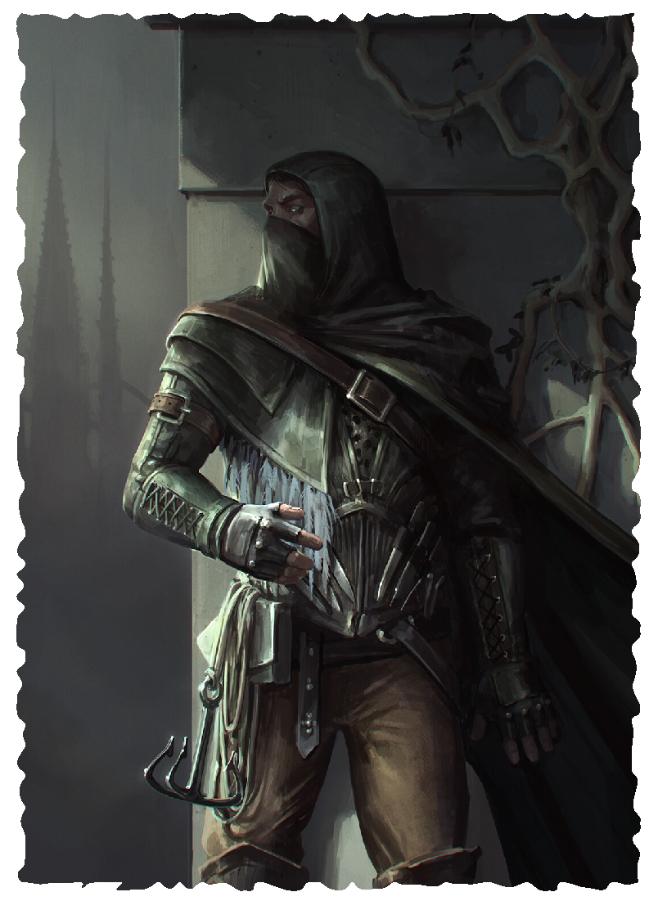

THIEF

Thieves live by taking things that don’t belong to them.
They have the skills they need to do so without being
caught in the act. They palm objects, lift items from people
they brush up against, thwart locks, foil traps, and discover
ways into places ordinarily forbidden to them. Although
many thieves steal for selfish reasons or because they feel
the need to do so, others develop the techniques to explore
tombs, scour ruins for lost relics, or hunt down other
thieves and bring them to justice.
LEVEL 3 THIEF
Attributes Increase two by 1
Characteristics Health +3, Perception +1
Languages and Professions Add three professions.
Quick Reflexes You can use a triggered action on your turn to hide or retreat.
Thievery Talents Choose two thievery talents from the ones described below.
LEVEL 6 THIEF
Characteristics Health +3, Perception +1
Dodge You can use an action or a triggered action on your turn to choose one creature you can see within short range. Until the end of the round, the target makes attack rolls against you with 1 bane and you make challenge rolls to resist its attacks with 1 boon.
Thievery Talents Choose one thievery talent from the ones described below.
LEVEL 9 MASTER THIEF
Characteristics Health +3
Opportunist When a creature within your reach takes damage from an attack, you can use a triggered action to attack that creature.
Thievery Talents Choose one thievery talent from the ones described below.
THIEVERY TALENTS
- Escape Artist When you are grabbed, you can use a triggered action to escape.
When rope bindings or manacles restrain you, you can use an action to attempt to escape the bonds. You must concentrate for 1 minute. At the end of this time, make an Agility challenge roll. On a success, you escape the bonds. On a failure, you are bound tight and you remain bound until freed.
- Hide in Shadows You can attempt to hide when you are in an area at least partially obscured by shadows, even if you are being observed.
- Keen Senses You make all Perception rolls with 1 boon.
- Move Silently You make challenge rolls to sneak with 2 boons.
- Open Locks If you have lock picks, you can use an action to open one lock you can reach. If the GM calls for a challenge roll, you make it with 1 boon.
- Pick Pockets You can use an action, or a triggered action on your turn, to take an object from a creature within your reach. The object taken must be something you can hold in one hand and be somewhere on the creature’s body but not held in its hands (or in a similar appendage). If you can see the object, you can take that object. If you can’t, because you reach into a pouch or backpack, the GM determines the item taken.
- Scale Walls You ignore the effects of difficult terrain when climbing, and you make challenge rolls to climb with 1 boon.
- Trap Sense When you search for traps or would resist a trap’s effects, you make the challenge roll with 1 boon.